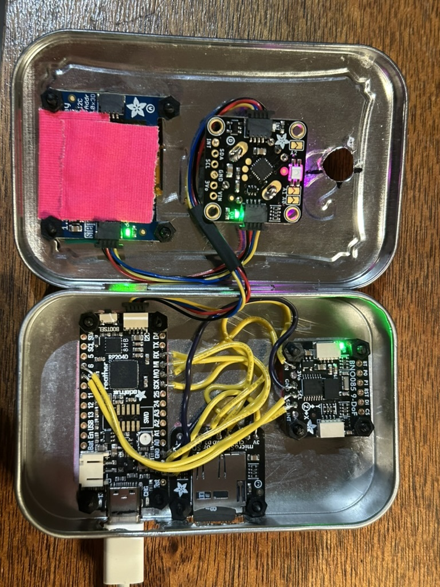

...what is this?
been hackin' on this bno08x sensor logger thingy.
the bno08x sensor does neat stuff like xyz accelerometer & gyro, step and tap detection, and some motion detection like walking/climbing stairz/in a car; and some more esoteric stuff like a circle gesture.
has a battery (not in the picture below), a sd card for sensor logz, and an oled display and rotary encoder knob & button for ui stuff ...all stuffed inna altoids tin.
(square holez are hard; took two altoids tins and wayyyy longer than i expected to get it all stuffed into the tin!)
okay, so this page, here. is some d3 graphs and three.js visualizations of that sensor data.
basically what's going on here is:
so, to get started with some graphs and animations, load some data from a file; either drag & drop a file onto this page, or use the file upload button below:
-- or --
try with some of these examples:
drop yr file here!